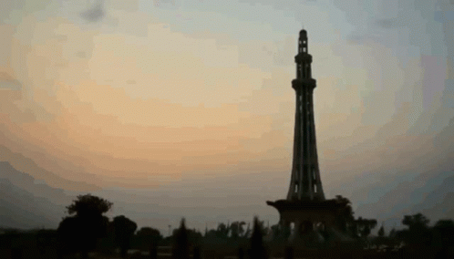
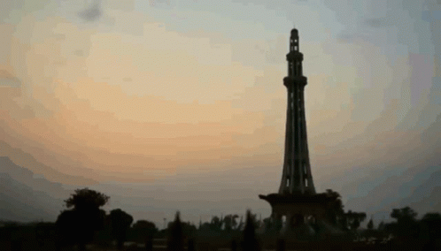

Yellowstone


Geographical Location: North America
Yellowstone is the first national park in the United States. It covers over 2.2 million acres, and provides an opportunity to see wildlife and explore geothermal areas. In fact, Yellowstone contains about half the world's active geysers.
These unique opportunities also bring out a lot of bad decisions among the tourists. Every year visitors injure themselves or the wildlife by getting close to the animals. You can see examples of people making bad decisions by visiting Yellowstone National Park: Invasion of the Idiots, Tourons of Yellowstone, or Cowboy State Daily.
Photo Gallery


Lahore
 

Geographical Location: Asia
Lahore, often referred to as the "Heart of Pakistan," is a city steeped in rich history and vibrant culture. Situated in the Punjab region of Pakistan, Lahore has been a significant center of trade, art, and learning for centuries. One of its most iconic landmarks is the Badshahi Mosque, a stunning architectural marvel built during the Mughal era, showcasing intricate design and grandeur that continues to awe visitors. Lahore Fort, another UNESCO World Heritage Site, stands as a testament to the city's historical significance, with its magnificent Mughal architecture and beautiful gardens.
Beyond its historical treasures, Lahore is known for its lively atmosphere and warm hospitality. The city is renowned for its delicious culinary scene, featuring mouthwatering dishes like biryani, nihari, and the world-famous Lahori seekh kebabs. The bustling streets of Lahore are adorned with colorful bazaars, such as Anarkali and Liberty Market, where visitors can shop for traditional crafts, textiles, and souvenirs. Lahore's cultural festivals, including the vibrant Basant kite festival and the melodious All Pakistan Music Conference, further highlight the city's love for art and celebration. Lahore's unique blend of history, culture, and gastronomy makes it a captivating destination that truly encapsulates the spirit of Pakistan. Lahore Fort Wiki, History of lahore.
Photo Gallery


Niagra Falla


Geographical Location: North America
Niagara Falls, one of the most iconic natural wonders in North America, is a breathtaking testament to the sheer power and beauty of nature. Located on the border between the United States and Canada, these majestic falls consist of three distinct cascades: the Horseshoe Falls, the American Falls, and the Bridal Veil Falls. The Horseshoe Falls, aptly named for its curved shape, is the most famous and dramatic of the trio, with water crashing down from a height of 167 feet. The thundering roar of the falls and the constant mist rising from its waters create an awe-inspiring spectacle that draws millions of visitors from around the world each year.
Beyond its mesmerizing visual appeal, Niagara Falls also holds a rich history and cultural significance. Indigenous peoples have revered the falls for centuries, considering it a sacred site. European settlers began visiting the falls in the 17th century, and it quickly became a popular destination for tourists. Today, Niagara Falls is not only a natural wonder but also a hub of entertainment, with casinos, hotels, and a range of tourist attractions surrounding the falls. Whether viewed from the American or Canadian side, a visit to Niagara Falls is an unforgettable experience, leaving visitors with a profound appreciation for the grandeur of the natural world. Niagara Falls Wiki, History of Niagra Falls.
Photo Gallery